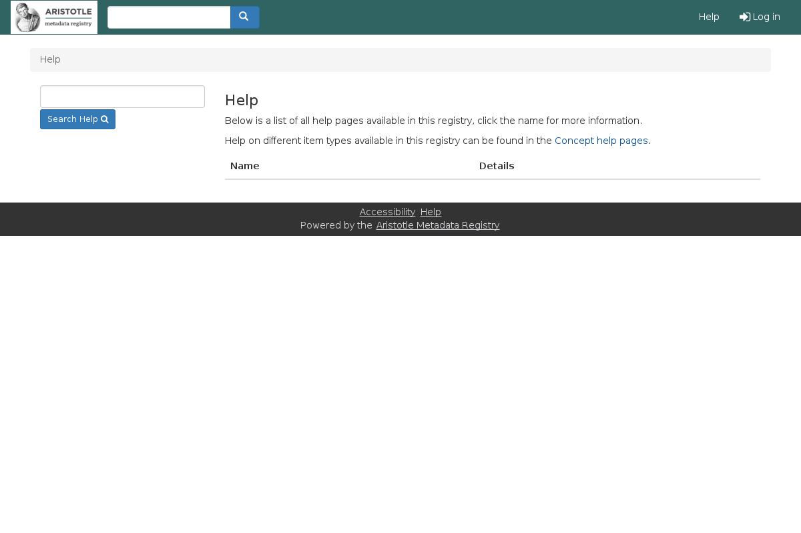

Getting help
You can get help in the registry.
How to find help
The default view when browsing shows a list of all of the available metadata types
within a registry, which extension they might belong to, a brief description and
the number of metadata items of that type.

Here is the help page!